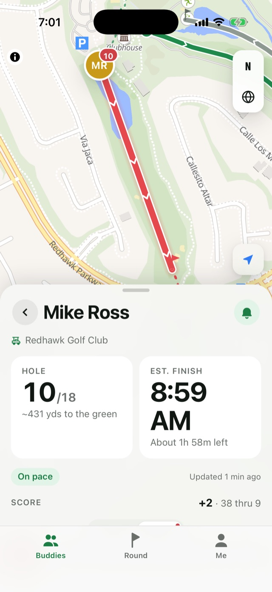
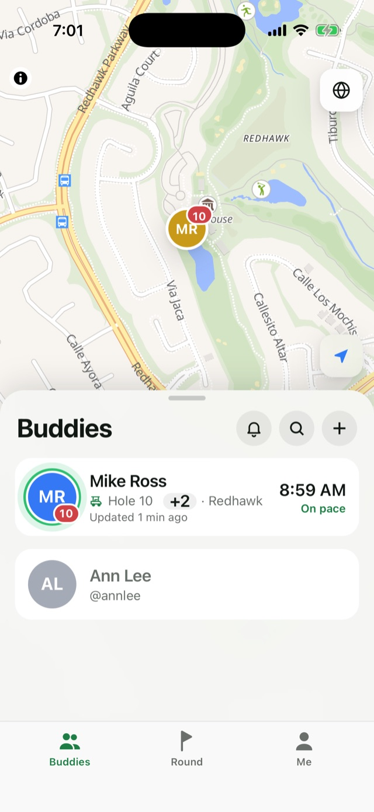
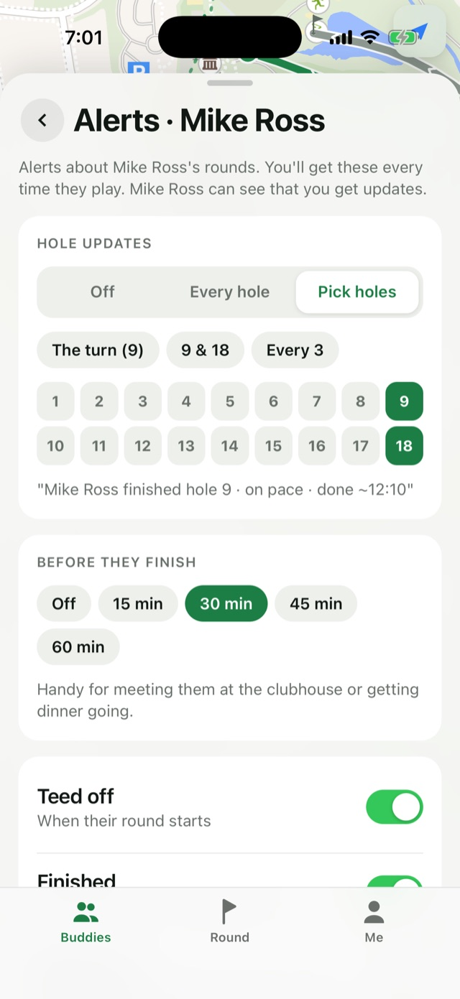
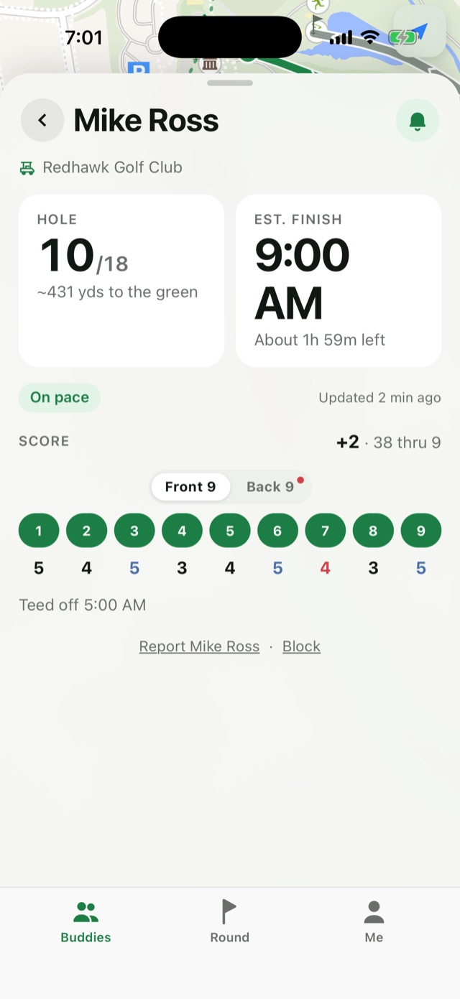
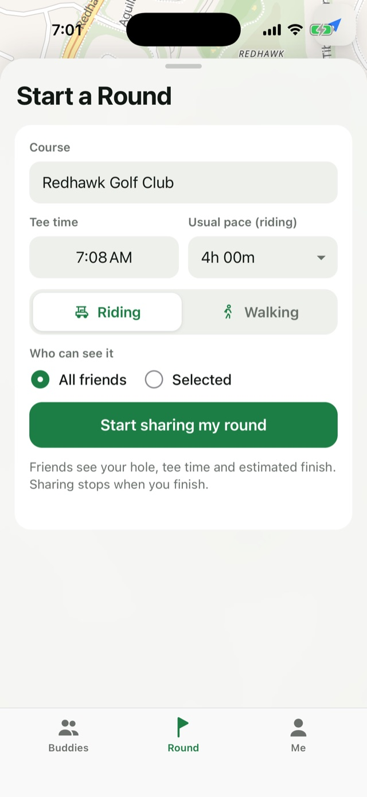

Brunch is at ten.
They're on the tenth.
FairWhere shows you which hole they're on and when they'll be done, live, from the first tee to the final putt. Plan dinner, time the pickup, and retire the “where are you?” text for good.
197 Southern California courses

Three holes. Par for the course.
The golfer taps once at the first tee. Everything after that takes care of itself.
They tee off
Pick the course and tee time, tap Start, and the phone goes in the pocket.
The app keeps up
GPS moves them to the next hole at each tee. The finish time follows their real pace.
They hole out
Sharing stops on its own when they finish, or if they leave the course.
Everything you'd ask, without asking.
The actual screens, straight from the iPhone.




Privacy, the way a good club keeps it.
Location is shared only on the course, only with the people they pick, and only while they play.
- Only during a roundLocation is used only after the golfer starts a round. Not before, not after.
- Sharing ends at the 18thIt stops when they finish, or by itself if they leave the course.
- Members onlyThey choose who sees each round: all their buddies, or just a few.
- No ads, no trackingNo advertising, no analytics trackers, and nothing sold to anyone.
- Report and block, everywhereOn every profile. Reports are reviewed within 24 hours.
Asked at the 19th hole.
Is FairWhere free?
Yes. Free to download, with no in-app purchases and no ads.
Do we both need the app?
Yes. The golfer uses it to share their round, and you use it to follow along. Add each other as buddies once and you're set for every round after.
Does the golfer have to do anything mid-round?
No. Once the round starts, FairWhere moves to the next hole by itself when they reach the tee, even with the phone in a pocket. If it ever needs a nudge, there are − and + buttons on the round card.
Which courses are covered?
197 courses across Southern California to start, with more on the way. Course maps come from OpenStreetMap.
Can buddies see where I am when I'm not playing?
No. Buddies only see a round while you're playing it. Before the first tee and after the last green, there's nothing to see.
Is there an Android version?
Not yet. FairWhere is iPhone only for now.
How do I get help?
Email support@fairwhere.app. We usually answer within a day. More answers on the support page.
Let them play through.
You'll know when they're done.
Free on iPhone. Set up in a minute, and never text the 14th tee again.